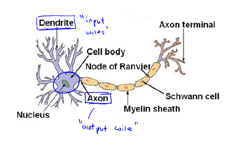
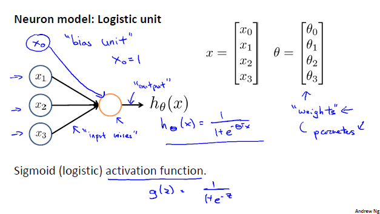
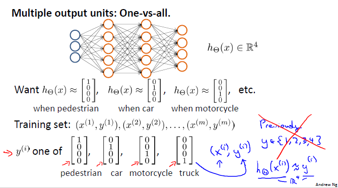

Model Representation I¶
Neuron and the Brain¶
Neuron Model: Logistic Unit¶
- Let’s define:
\(a^{(j)}_{i}\) = “activation” of unit \(i\) in layer \(j\)
\(\Theta^{(j)}\) = matrix of weights controlling function mapping from layer \(j\) to layer \(j + 1\)
- Here:
Input layer \(1\) has \(3\) units: \(x_{1}, x_{2}, x_{3}\); \(\Theta^{(1)} \in \mathbb {R^{3*4}}\)
Hidden layer \(2\) has \(3\) units: \(a^{(2)}_{1}, a^{(2)}_{2}, a^{(2)}_{3}\); \(\Theta^{(2)} \in \mathbb {R^{4}}\)
Output layer \(3\) has \(1\) unit: \(a^{(3)}_{1} = y = h_{\Theta}(x)\)
- Add “bias unit”, \(x_{0} = 1\), compute for Hidden layer \(2\):
\(a^{(2)}_{1} = g(\Theta^{(1)}_{10} x_{0} + \Theta^{(1)}_{11} x_{1} + \Theta^{(1)}_{12} x_{2} + \Theta^{(1)}_{13} x_{3})\)
\(a^{(2)}_{2} = g(\Theta^{(1)}_{20} x_{0} + \Theta^{(1)}_{21} x_{1} + \Theta^{(1)}_{22} x_{2} + \Theta^{(1)}_{23} x_{3})\)
\(a^{(2)}_{3} = g(\Theta^{(1)}_{30} x_{0} + \Theta^{(1)}_{31} x_{1} + \Theta^{(1)}_{32} x_{2} + \Theta^{(1)}_{33} x_{3})\)
- Add “bias unit”, \(a^{(2)}_{0} = 1\), compute for Output layer \(3\):
\(h_{\Theta}(x) = a^{(3)}_{1} = g(\Theta^{(2)}_{10} a^{(2)}_{0} + \Theta^{(2)}_{11} a^{(2)}_{1} + \Theta^{(2)}_{12} a^{(2)}_{2} + \Theta^{(2)}_{13} a^{(2)}_{3})\)
If network has \(s_{j}\) units in layer \(j\), \(s_{j+1}\) units in layer \(j+1\), then \(\Theta^{(j)}\) will be of dimension \(s_{j+1}*(s_{j}+1)\). \(\Theta^{(j)} \in \mathbb {R^{s_{j+1}*(s_{j}+1)}}\)
Model Representation II¶
Forward Propagation: Vectorized Implementation¶
\(a^{(1)} = x = {\begin{bmatrix}x_{0}\\x_{1}\\x_{2}\\x_{3}\end{bmatrix}}\)
\(z^{(2)} = {\begin{bmatrix}z^{(2)}_{1}\\z^{(2)}_{2}\\z^{(2)}_{3}\end{bmatrix}} = \Theta^{(1)} a^{(1)}\)
\(a^{(2)} = g(z^{(2)}) \in \mathbb {R^{3}}\), add \(a^{(2)}_{0} = 1\), \(a^{(2)} \in \mathbb {R^{4}}\)
\(z^{(3)} = \Theta^{(2)} a^{(2)}\)
\(h_{\Theta}(x) = a^{(3)}_{1} = g(z^{(3)})\)
Neural Network learning its own features
Other network architectures can have many hidden layers between the input layer and the output layer

Multi-class Classification¶
Multiple output units: One-vs-all